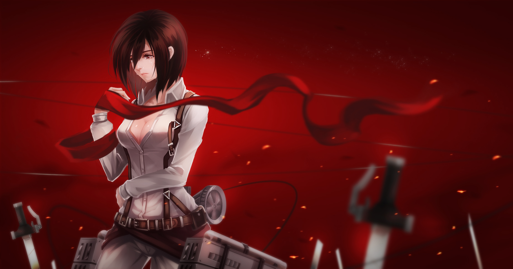

Best Anime
Published on under JW
There are numerous animations produced and released all over the world every year. Here, anime, which is the Japanese term originating in Japan and especially means the animations made in Japan.
It is said that the first Japanese animation was made and released in 1917. Speaking of the earliest famous anime in Japan, Astro Boy (a.k.a. Mighty Atom) was released in 1963 as the first anime series aired on TV. Around hundreds of new anime are aired on TV and distributed to the movie streaming platforms and come to the screens every year, and the number of must-watch anime is going on increasing year by year.
- DeathNote
- Pokémon
- Re:Zero -Starting Life in Another World
- Neon Genesis Evangelion
- One Piece
- Naruto
- Demon Slayer: Kimetsu no Yaiba
Above are some of the best anime series including both the classic anime franchises and the brand new series
DeathNote
Tokyo Ghoul
Attack On Titan
Haikyu
It is not easy to narrow down to only my favourite anime and rank them, and there are other attractive anime that are worth watching outside the best anime list, of course.

The industry of anime has prospered substantially in Japan partly because the country has other Japanese pop cultures such as manga, video games and light novels. Some popular anime are adaptations of manga, video games, light novels and other media. And, anime has flourished worldwide so rapidly since anyone can access the Japanese animations with English dubs and subtitles.
My Hero Academia (僕のヒーローアカデミア) is one of the most popular ongoing anime while the original manga has been published on the Weekly Shonen Jump since 2014. A young boy Izuku Midoriya and other Heros fights the Villains using their superpowers Quirks.
Quite a few anime lovers look on Steins;Gate (シュタインズ・ゲート) as the best anime in recent years. The sci-fi anime’s 24 episodes were aired on TV in 2011, followed by Steins;Gate 0 (シュタインズ・ゲート ゼロ), the continuation of the story (but the timeline is past), in 2018.
The main character Rintaro Okabe and other Future Gadget Laboratory members try to invent a kind of time machine, and the anime is known for its time loop plot. Many fans of Steins;Gate visit the town of the setting: Akihabara, Tokyo.
Jonathan Wong
In terms of Action, definitely Naruto Shippuden. I have watched, Fairy Tail, World Trigger, Busou Renkin, but the best I feel is Naruto Shippuden. The thing I like the most about it is its emphasis on war, suffering and peace.
Anonymous
I know the definition of best anime can very to person to person and since I have seen a good 50 anime's, many of them which are amazing!, it can be quite hard. But ill keep this as short and simple as possible. In my humble opinion the best amines is Hunter x Hunte
Vaibhav Savala
I have watched and read around 100 anime and manga series. These are some Anime and manga series which i think were really awesome and gave me goosebumps. One Piece follows the adventures of Monkey D. Luffy , a young man whose body gained the properties of rubber after unintentionally eating a Devil Fruit. With his crew of pirates, named the Straw Hat Pirates
Rajan Pandey
Bakuman is derived from Bakuchi Manga which means Gambling Manga. It is a journey of two high school students who aims to become professional mangaka who can make a living out of this job when they grow up. It’s realistic so it’s quite inspirational, so I would recommend everyone to watch it once!
Chen Gong
Although I have never watched One Piece, I think I can agree that it will be one of the classics of all time, like Dragonball Z. However, I have another work in mind for the best anime series. It has a strange name, it's called PLANETES (プラネテス), no I didn't misspell it, it's not planets.
Arnee Libelo
Some might argue between Fullmetal Alchemist, Hunter X Hunter, and Death Note for this question but they're equally good in their own right. Some might chime in classics such as Astro Boy and Tetsujin 28-go and those are solid ones to get by. And most do chime in recent pieces which are highly debatable due to their respective content such as SAO and Darling in the Franxx. But the bottomline is that there's no definite answer to this question since it all boils down to taste.